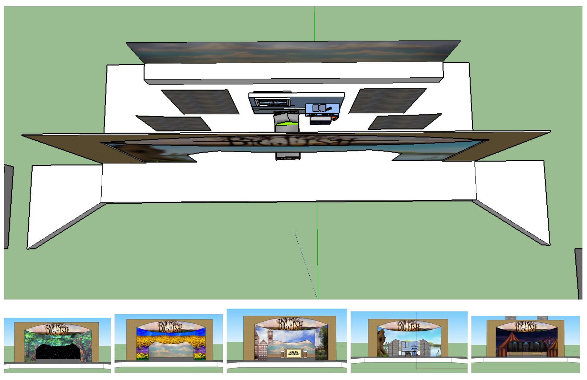
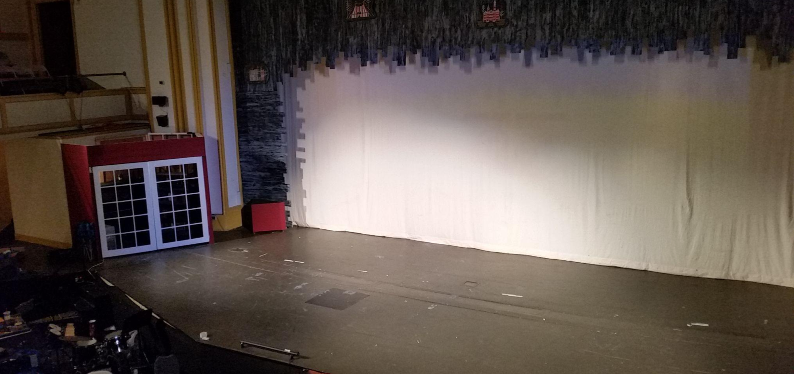
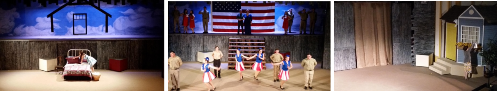

Technical Theatre Design Portfolio
Big Fish Design
2017 - Big FIsh - Musical Basic show synopsis Edward Bloom has lived a full and fantastical life, populated by witches, giants, and mermaids, marked by true love that stops time in its tracks, and framed by heroics that push the limits of believability. His adult son, Will, is no longer amused by his father’s fantastical tales, insisting on a rational rather than a fantastical account of one’s life. When Edward’s health declines, and Will learns that he and his wife, Josephine, will have a son of their own, Will decides to find out his father’s “true” life story, once and for all. Big Fish is a heartfelt, powerful, and truly magical musical about fathers, sons, and the stories that we use to define our identities. With spine-tinglingly beautiful music and lyrics by Andrew Lippa, and a funny, heartwarming book by John August, Big Fish is a magnificent “big fish” of a tale, itself -- spectacular, fantastical, and overflowing with love. Stageagent.com. (n.d.) Show synopsis. Retrieved from https://stageagent.com/shows/musical/3393/big-fishPre production design sketches and descriptions
My designs were based on creating a world centered around the stories of Edward Bloom. The design is an example of a presentational set. The scenic elements move around and fly in and out, constantly changing the location and feel of the show. The design matched the style and feel of the southern United States of the 1940s and 1950s and the simple feel of a small-town boy as he lived an extraordinary life. This show used a false proscenium that created an outline around the stage opening. This design element was made to look like old barn wood and provided the ambiance that set the stage and matched the show's motif.Post production photographs and evaluation
Evaluation of Designs: Using the Principles of Art The unifying theme of the design - larger than life storytelling, with love and family at the center Balance - The entire design was staged in the center between the false proscenium. Alignment- The design was aligned from left to right across the stage. The two structures on stage right and left were the bookends to the life of Edward Bloom, and the story unfolded between them. Emphasis - As the settings moved from location to location, the center of the stage was always the focus Movement - The movement of the design flowed with the show. Most of the scenic elements and props were flown in on moved on by characters. Pattern - Faith and family were represented in every aspect of the design and repeated in large and small detail. Contrast - The false proscenium was the scenic element that always brought the story back to the main character's roots. It was the one constant of the set that moved and shifted throughout the musical. 2017 - Big FIsh - Musical Basic show synopsis Edward Bloom has lived a full and fantastical life, populated by witches, giants, and mermaids, marked by true love that stops time in its tracks, and framed by heroics that push the limits of believability. His adult son, Will, is no longer amused by his father’s fantastical tales, insisting on a rational rather than a fantastical account of one’s life. When Edward’s health declines, and Will learns that he and his wife, Josephine, will have a son of their own, Will decides to find out his father’s “true” life story, once and for all. Big Fish is a heartfelt, powerful, and truly magical musical about fathers, sons, and the stories that we use to define our identities. With spine-tinglingly beautiful music and lyrics by Andrew Lippa, and a funny, heartwarming book by John August, Big Fish is a magnificent “big fish” of a tale, itself -- spectacular, fantastical, and overflowing with love. Stageagent.com. (n.d.) Show synopsis. Retrieved from https://stageagent.com/shows/musical/3393/big-fish Pre production design sketches and descriptions My designs were based on creating a world centered around the stories of Edward Bloom. The design is an example of a presentational set. The scenic elements move around and fly in and out, constantly changing the location and feel of the show. The design matched the style and feel of the southern United States of the 1940s and 1950s and the simple feel of a small-town boy as he lived an extraordinary life. This show used a false proscenium that created an outline around the stage opening. This design element was made to look like old barn wood and provided the ambiance that set the stage and matched the show's motif.Post production photographs and evaluation
Evaluation of Designs: Using the Principles of Art The unifying theme of the design - larger than life storytelling, with love and family at the center Balance - The entire design was staged in the center between the false proscenium. Alignment- The design was aligned from left to right across the stage. The two structures on stage right and left were the bookends to the life of Edward Bloom, and the story unfolded between them. Emphasis - As the settings moved from location to location, the center of the stage was always the focus Movement - The movement of the design flowed with the show. Most of the scenic elements and props were flown in on moved on by characters. Pattern - Faith and family were represented in every aspect of the design and repeated in large and small detail. Contrast - The false proscenium was the scenic element that always brought the story back to the main character's roots. It was the one constant of the set that moved and shifted throughout the musical.   Ryan W. VanDyke
Contact me
copyright 2021, VanDyke Design
Curtian Photo used on footer by Rob Laughter on Unsplash.com
Phone icon by Icons8